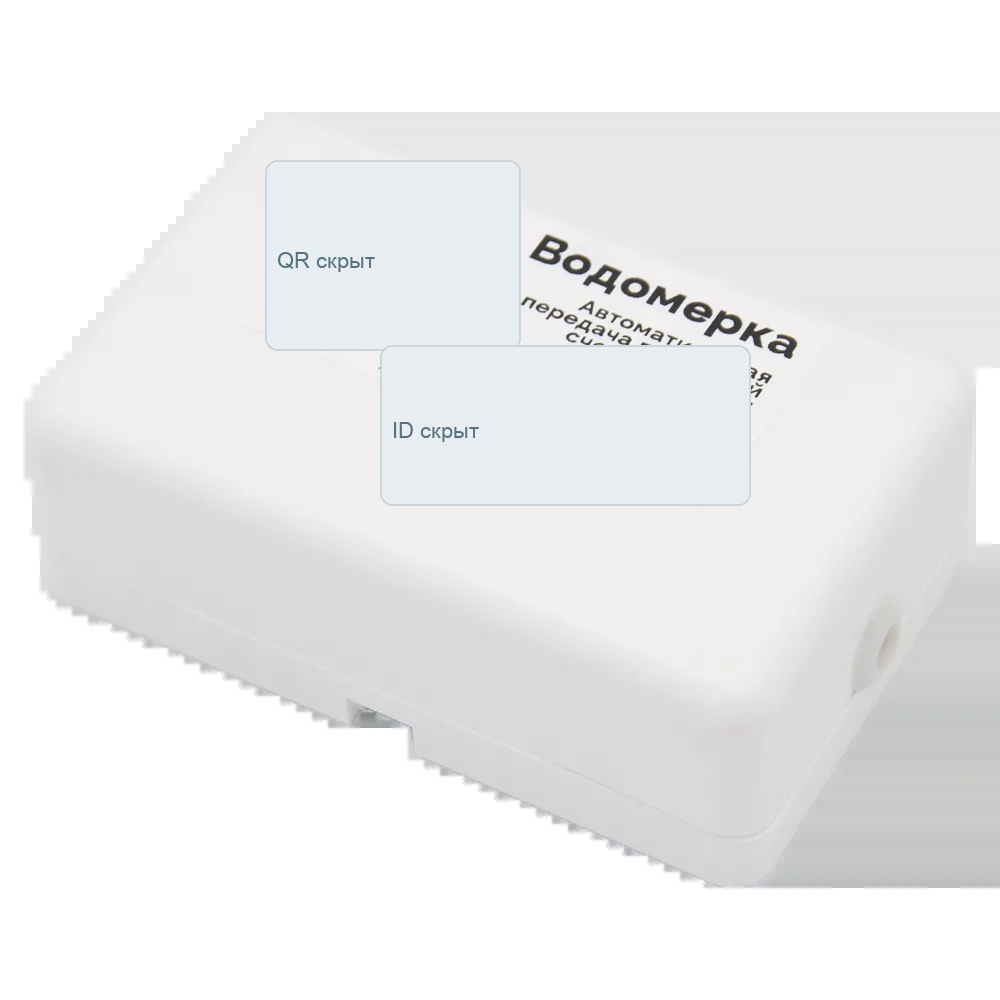
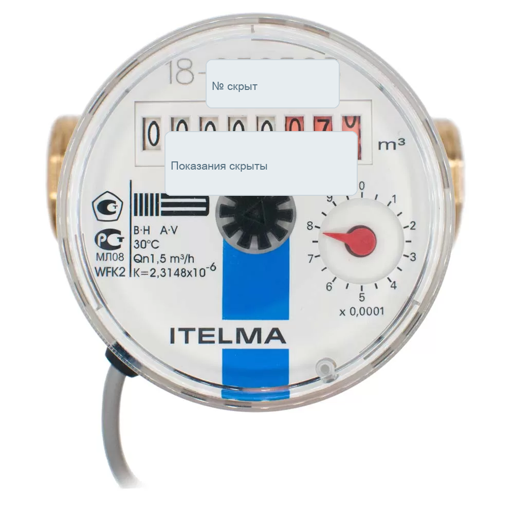
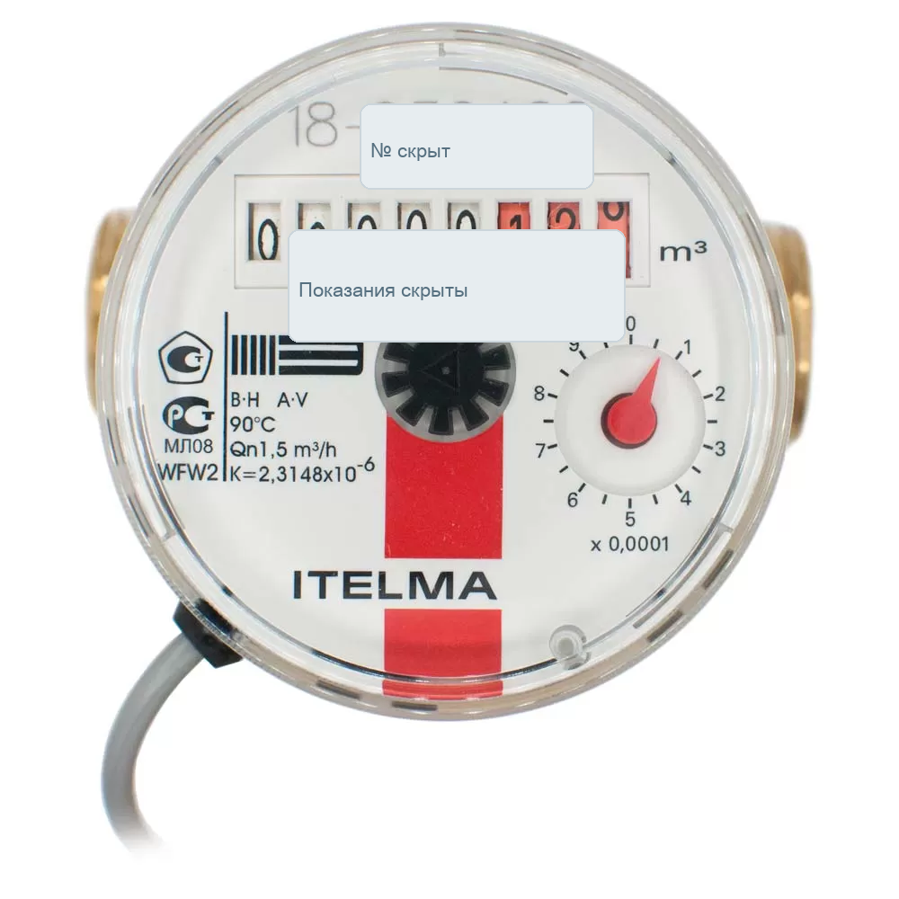
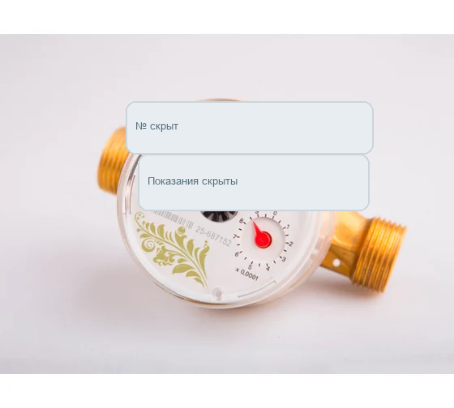
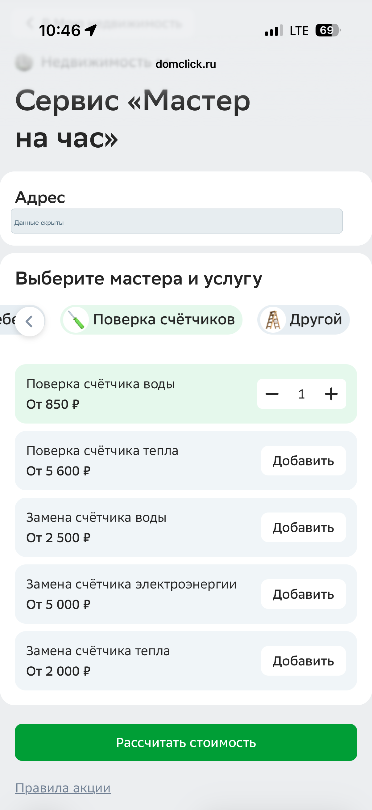
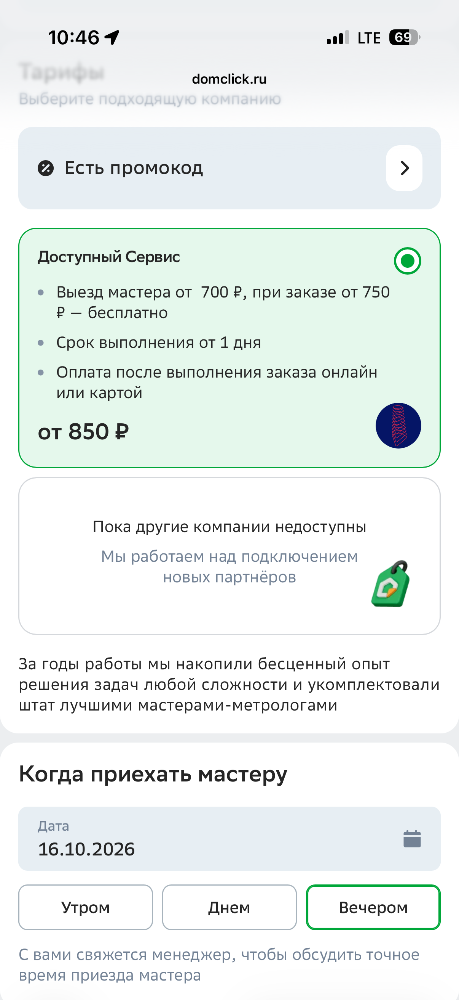
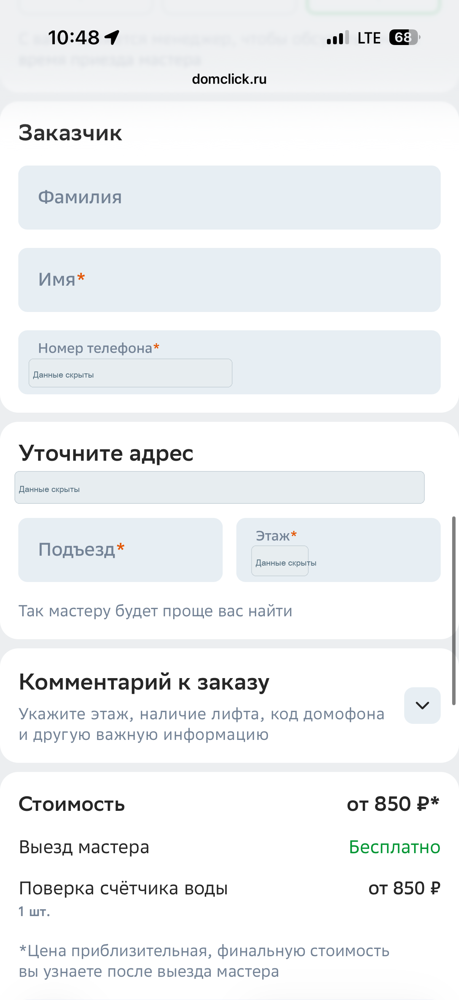
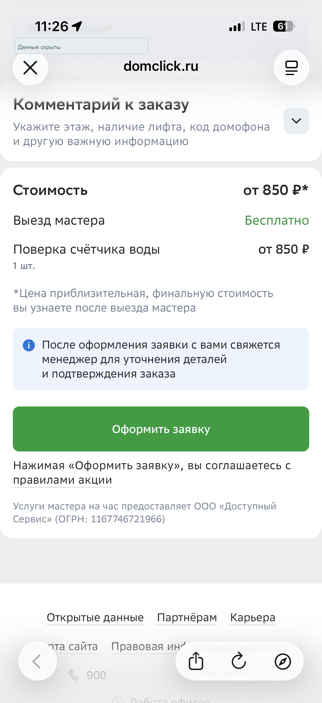
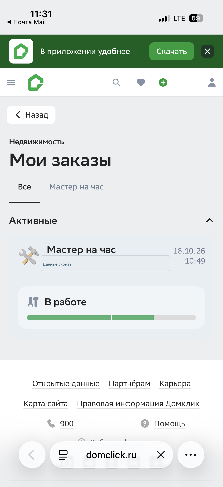
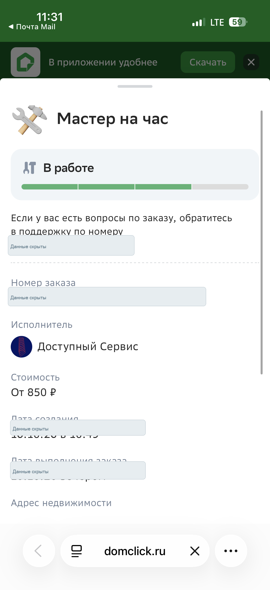

Сценарий АНа пилоте не рассматриваем
Собственный сбор
Контроллер→Наш сервер учёта
СберДевайсов→БРИС ЖКХ→Домклик
СберДевайсов→БРИС ЖКХ→Домклик
Выбран маршрут через облако SAURES. Пять шагов отделяют команду от первой установки и проверки учёта показаний в начислении. Текущие статусы, не зафиксированные в ТЗ, требуют подтверждения.
Два маршрута из ТЗ. На пилоте используем сценарий Б, чтобы быстрее проверить сквозную передачу показаний и их учёт в начислении.
SAURES → БРИС ЖКХ → Домклик
Сверху — состояние каждой вехи по ТЗ. Подробности и артефакты раскрываются внутри шага. Статус выполнения после даты материалов требует подтверждения.
БРИС ЖКХ подготовила базу по двум критериям: поверка в периоде 5 месяцев; приборы учёта, требующие замены после двух поверок. Около 26 тыс. лицевых счетов. Формат передачи в Домклик согласован.
БРИС ЖКХ решает с юристами вопрос передачи файлом и правовой обвязки. После решения и передачи массива Домклик выполняет маппинг данных.
БРИС ЖКХ — правовой вопрос; Домклик — последующий маппинг.
Решение БРИС ЖКХ до 23.10.2026. Срок маппинга требует подтверждения.
Адрес и номер квартиры относятся к персональным данным. Адреса получены из базы конкретного поставщика — Тверьводоканала, а не из общедоступной ГАР. Основание и условия передачи требуют решения юристов.
Передача указанных данных возможна только при полном соблюдении требований об обработке ПДн, а именно:
Два Excel-файла из ТЗ доступны для скачивания.
Подготовлена база аккредитованных компаний по Росаккредитации: 23 ИНН, из них 6 наиболее подходящих.
Домклик прорабатывает компании, договорную обвязку и подключение к витрине «Недвижимость / Сервисы». SAURES обучает СМР/ПНР.
Домклик — проработка и подключение; SAURES — обучение.
Требует подтверждения.
Порядок учитывает местное присутствие и не является рейтингом качества. Цены и договорные цепочки требуют проверки.
В ТЗ приложены изображения «Водомерки», ITELMA и «Золотника», таблицы цен и КП SAURES.
Закупочная процедура и закупка на стороне Домклика.
Домклик — закупочная процедура.
Требует подтверждения.

Контроллер ВОДОМЕРКА (Wi-Fi, 2 канала для подключения двух счетчиков воды 10 литров/импульс, 3 щелочные батареи АА, PCB антенна на плате).


Счетчик воды ITELMA ½” длина 80мм или 110мм импульсный выход надежный НАМУР (лучший вариант в России).

Счетчик воды ЗОЛОТНИК ½” длина 80мм или 110мм импульсный выход стандартный ГЕРКОН (эконом вариант, производство Китай, завод ITELMA).
* В КП указано, что цены включают использование облака SAURES. При другом облаке цена ниже на 10%. Цены действительны до 31.12.2026, гарантия 2 года. Изображения — из вложений ТЗ; номера, QR-коды и показания закрыты.
В ТЗ вложены экраны действующего процесса заказа сервиса «Поверка счётчиков» в Домклике. Почти на всех требуется изменение вординга.
Отрисовать макеты и вординг в процессе заказа сервисов «Поверка счётчиков», отдельно показать допуслугу «Установка автоматической передачи показаний».
Домклик — подготовка макетов. Детальный владелец и согласующий требуют подтверждения.
Требует подтверждения.

01 · допуслугаСейчас: «Сервис „Мастер на час“», «Поверка счётчика воды».
Предложение: добавить отдельный выбор «Установка автоматической передачи показаний» рядом с услугами по счётчикам; уточнить заголовок раздела как «Счётчики воды: поверка и подключение».
Экран менять: да. Отдельная добровольная допуслуга, без включения по умолчанию.
02 · состав заказаСейчас: карточка «Доступный Сервис» и выбор времени мастера.
Предложение: над выбором времени показывать «В заказе: поверка счётчика воды» и, при выборе, «Установка автоматической передачи показаний»; доступность исполнителя для монтажа требует подтверждения.
Экран менять: да. Состав заказа должен следовать за выбором на первом экране.
03 · стоимостьСейчас: «Стоимость от 850 ₽», «Поверка счётчика воды».
Предложение: раздельно показать «Поверка счётчика воды — от 850 ₽» и «Установка автоматической передачи показаний — стоимость требует подтверждения»; при отсутствии выбора допуслуги её строку не показывать.
Экран менять: да. Полная цена и условия подлежат согласованию.
04 · итог заявкиСейчас: «Стоимость от 850 ₽», «Оформить заявку», текст об уточнении деталей менеджером.
Предложение: «Ваша заявка: поверка счётчика воды» и, если выбрано, «Установка автоматической передачи показаний»; отдельные цены до кнопки. Формулировку о финальной стоимости согласовать после получения тарифа.
Экран менять: да. Новый состав услуг должен быть виден до отправки.
05 · названиеСейчас: заказ называется «Мастер на час».
Предложение: при выбранной допуслуге показывать «Поверка и автоматическая передача показаний»; без неё — «Поверка счётчика воды».
Экран менять: да, в названии услуги и составе заказа.
06 · деталиСейчас: «Мастер на час», статус «В работе», стоимость «От 850 ₽».
Предложение: показать выбранные услуги отдельными строками: «Поверка счётчика воды» и «Установка автоматической передачи показаний»; стоимость и статус каждой работы — после согласования модели заказа.
Экран менять: да. Имена, номера заказов, адреса и контакты на копии закрыты.Процесс заказа поверки счётчиков в СБОЛе менять не требуется — как указано в ТЗ.
В ТЗ приложен пример витрины «Мои счётчики» в разделе «Моя недвижимость». По информации от Домклика, реализовать сервис быстро не получится.
Проработать витрину отдельно от запуска пилота. Для просмотра показаний житель может использовать БРИС ЖКХ.
Требует подтверждения.
Требует подтверждения. Витрина не является блокером пилота.
Показания и состояние приборов для вашей недвижимости
Быстро не реализуется. Первая установка и проверенное начисление не зависят от готовности витрины.
Шесть пунктов из ТЗ в исходном порядке. Для незафиксированных владельцев и сроков оставлена отметка о необходимости подтверждения.
Роль на проект: проект многосоставной и требует агрегации большого объёма данных.
Владелец назначения: требует подтвержденияПередача в Домклик базы по поверочным компаниям и заключение с ними договоров. После оформления договорной обвязки SAURES обучает действующие компании.
Срок: требует подтвержденияКоммерческое предложение нужно для закупочной процедуры.
Обезличенная копия КП ↗Ожидаем данные от БРИС ЖКХ и передаём их для маппинга в Домклик либо эскалируем проблему передачи персональных данных.
Ответ по передаче: БРИС ЖКХ; дальнейший срок маппинга требует подтвержденияПроцесс затягивается и стопорится со стороны БРИС ЖКХ из-за первоначального решения вопроса передачи персональных данных и желания включить в процесс Тверьводоканал. После получения данных от БРИС ЖКХ требуется провести встречу C-level для урегулирования этого момента.
Дата и состав встречи: требуют подтверждения